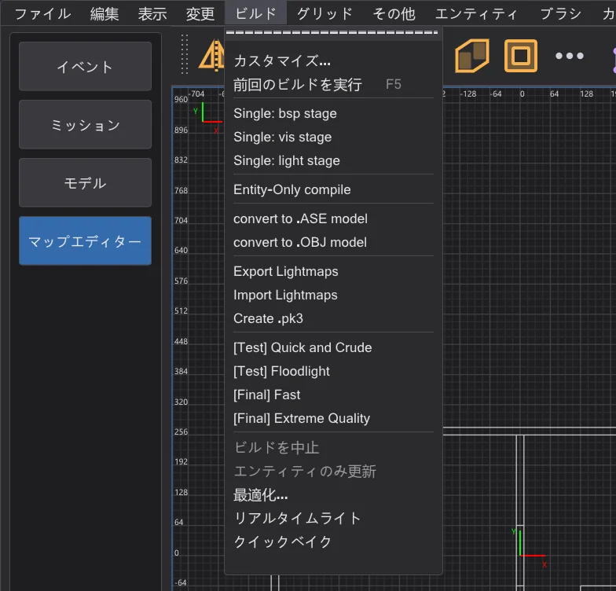
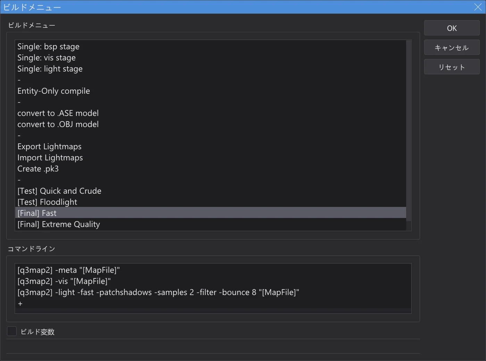
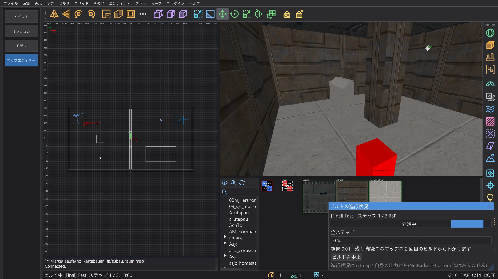
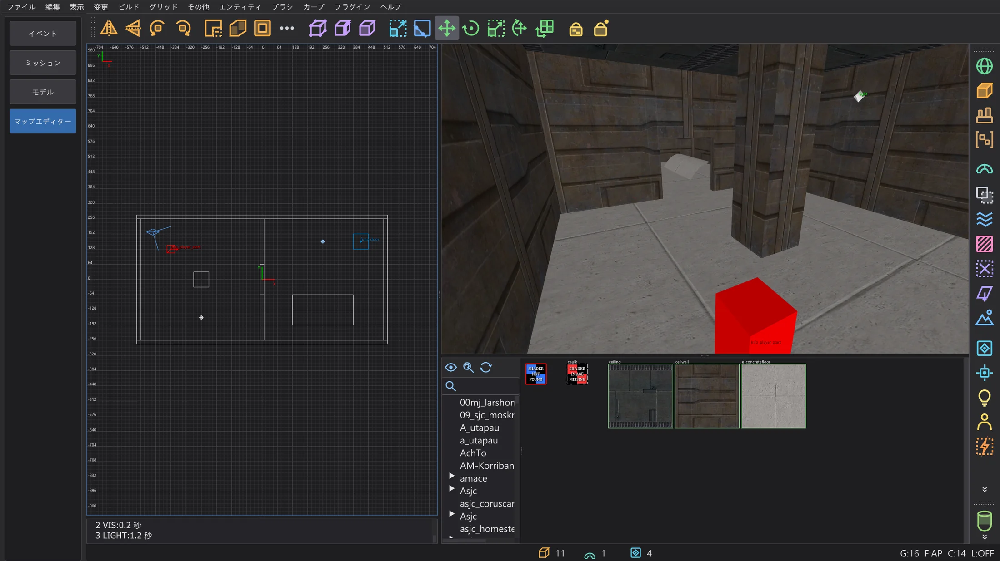
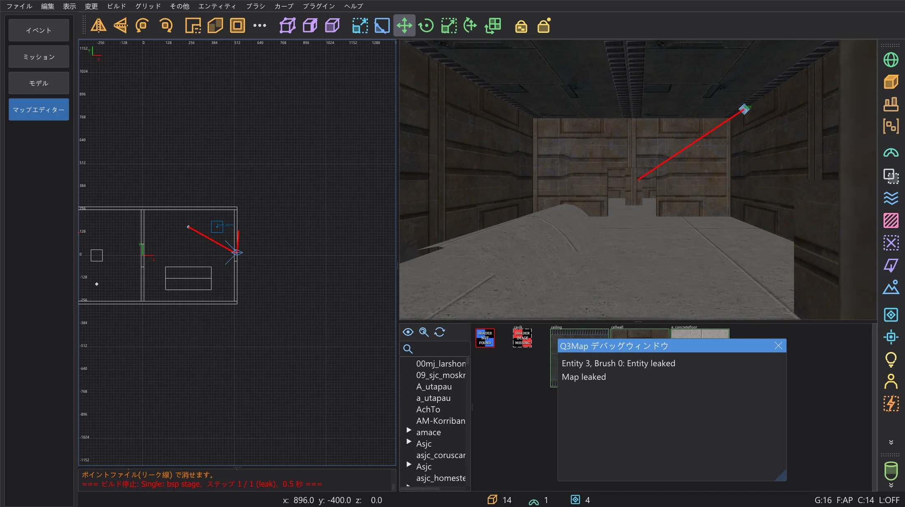
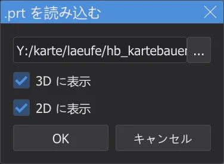
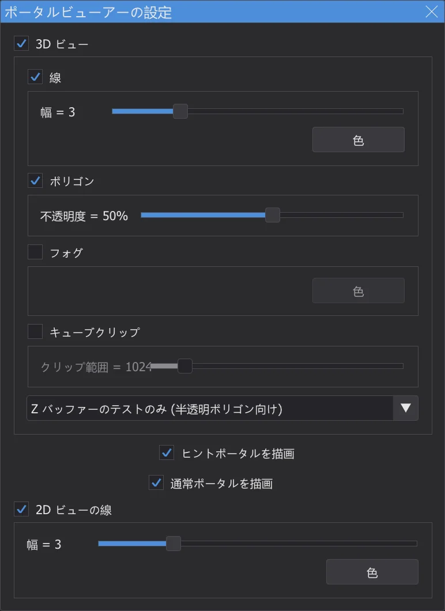
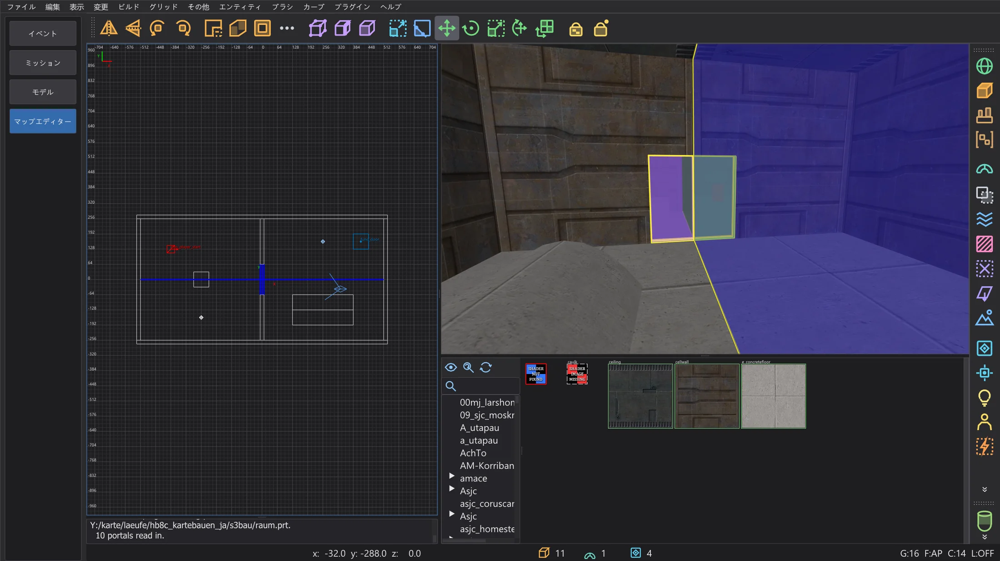
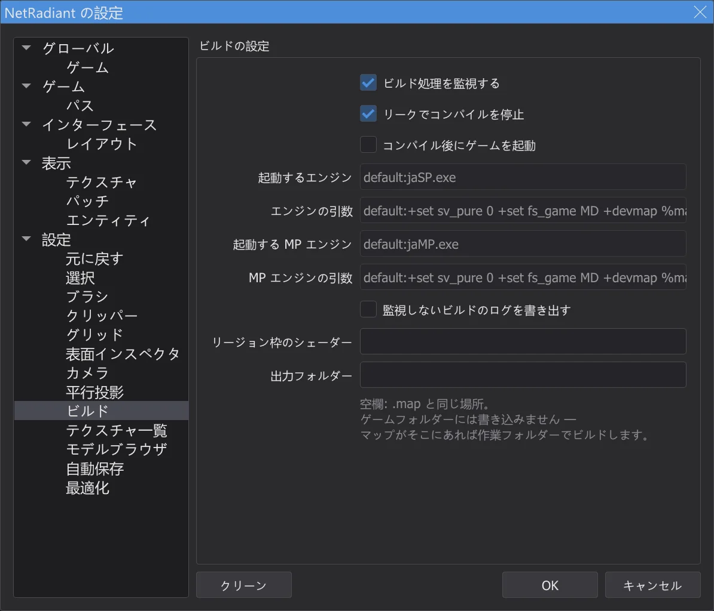

マップエディター:マップのビルド
ビルド メニューから q3map2 でマップを遊べる .bsp にします。q3map2 はバックグラウンドで動き、出力はコンソールに表示されます。リークは赤い線で、ポータルは必要に応じて表示され、ゲームフォルダーには書き込みません。
⟦ビルド⟧ メニュー#

各項目はマップに対して q3map2 のコマンドを 1 つ以上実行します。マップコンパイラー bhed_q3map2.exe は NetRadiant-Custom の q3map2 で、プログラムと一緒にビルドされ behaved.exe の隣にあります。結果も同じです。前回のビルドを実行(F5)で最後の項目を繰り返します。カスタマイズ で ビルドメニュー ダイアログが開きます。項目とコマンドを追加(+ をダブルクリック)、名前変更、ドラッグで並べ替え(Ctrl でコピー)、削除できます。ビルド変数 には [MapFile] や [q3map2] などの変数が表示されます。メニューはマップエディターを閉じるときに保存されます。

3 つの段階#
| 段階 | 内容 |
|---|---|
BSP(-meta) | ブラシとパッチから BSP ツリーとサーフェスを作り、.bsp、.prt、.srf を書き出します。マップが閉じていなければリークで止まります。 |
VIS(-vis) | どの領域どうしが見えるかを計算し、ゲームの描画を減らします。BSP 段階のポータルファイルが必要です。 |
LIGHT(-light) | ライトエンティティと空の光をライトマップとライトグリッドに焼き込みます。 |
[Test] Quick and Crude は 3 段階を手早く実行して、まず確認するためのものです。[Final] Fast と [Final] Extreme Quality で光を本来の品質にします。一部だけを作業しているときは単独の段階が便利です。たとえばライトを動かしたあとは Single: light stage だけを実行します。
ビルド中#

- 1
最初にマップが保存されます(名前のないマップは名前を尋ねます)。リージョンがあるときはリージョンだけがビルドされます(
<マップ>.reg)。 - 2
q3map2 はウィンドウなしで起動し、NetRadiant-Custom と同じくローカル接続で結果を返します。警告は黄色、エラーは赤で表示され、エラーが出ると残りのステップは実行されません。
- 3
作業を続けられます。見回したり、選択したり、編集したりできます。ビルド > ビルドを中止 で q3map2 を終了します。
- 4
最後の行に項目、ステップ数、時間が表示されます。q3map2 の終了コードが 0 でなければそれも表示されます。

[Final] Fast のあとのコンソール。

junk.txt にも書き出します。リークを探す#

マップの内側はブラシで完全に閉じていなければなりません。q3map2 がエンティティから外の空間への道を見つけると、BSP 段階は MAP LEAKED(赤)で止まり、リーク線が 2D ビューとカメラに赤く表示されます。Q3Map デバッグウィンドウ にはリーク元のエンティティが表示され、クリックで選択できます。
| Ctrl+Shift+K | 次のリーク箇所:カメラと 2D ビューを線の次の点へ移し、線に沿って見る |
| Ctrl+Shift+L | 前のリーク箇所:前の点に戻る |
線をたどってマップの外に出るところを探します。そこが穴です。穴をふさいで、もう一度ビルドします。ファイル > ポイントファイル(リーク線) で線を消したり表示したりします(<マップ>.lin を読みます)。マップを保存すると線は消えます。
ポータルを表示する#




ポータルは、VIS 段階が計算に使う領域間の開口部です。プラグイン > prtview > Load .prt file で最後の BSP 段階のポータルファイルを読み込みます(3D に表示、2D に表示)。カメラでは各ポータルが輪郭付きの色付き半透明ポリゴンとして、2D ビューでは青い線として表示されます。プレイヤーが遠くまで見える場所に小さなポータルが多いとマップが重くなります。ヒントブラシやディテールブラシが役立ちます。Configure Portal Viewer で色、線の幅、不透明度、フォグ、クリップ用の立方体を設定し、Toggle portals (3D)/(2D) と Unload .prt file で表示を切り替えます。

ファイルの出力先#

.bsp などのファイルは、NetRadiant-Custom と同じく .map の隣に書き出されます。ビルド ページの 出力フォルダー を指定すると、代わりに選んだフォルダーに出力します(マップをそこへコピーしてビルドします)。ゲームフォルダーには決して書き込みません。マップや出力フォルダーがゲームフォルダー内にある場合は、設定フォルダー内の作業フォルダーでビルドし、コンソールにそう表示します。
ゲームでテストする#
- 1
ビルドした
<名前>.bspをゲームのmapsフォルダーにコピーします。たとえばGameData\base\maps(Mod の場合はその Mod のフォルダー、例:MD\maps)です。マップエディターはこれを自分では行いません。ゲームフォルダーには書き込まないからです。 - 2
ゲームを自分で起動し、Shift+~ でコンソールを開いて
devmap <名前>と入力します(.bspは付けません)。devmapでは、見て回るためのnoclipやgodなどのチートも使えます。 - 3
次にビルドしたら
.bspをもう一度コピーし、もう一度devmap <名前>と入力します。ゲームが新しい版を読み込みます。
+devmap <名前> でゲームを起動します。その場合、.bsp はゲームが探すフォルダーにすでに置かれている必要があります。AutoCaulk#
ブラシ > 選択を自動コーク(F4)は、選択したブラシのうち内側から見えない面すべてに caulk テクスチャを付けます。サーフェスが減り、マップが軽くなります。カメラを選択範囲の中に置いてください。どの面が隠れているかは q3map2 が判断します。元に戻すは 1 回で済みます。